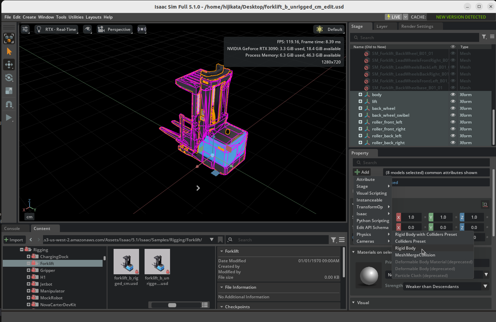
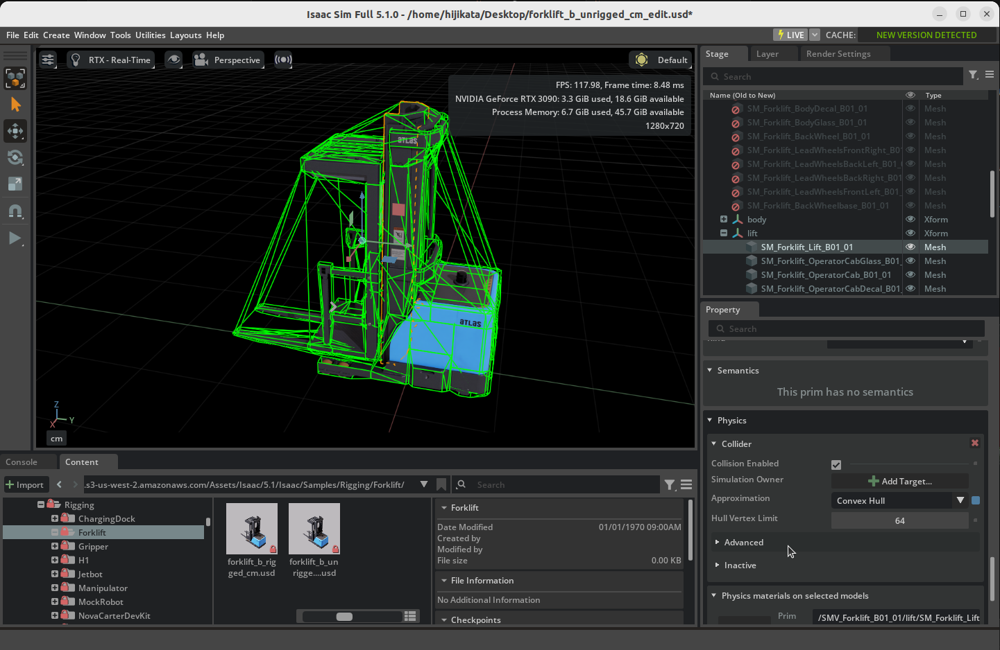
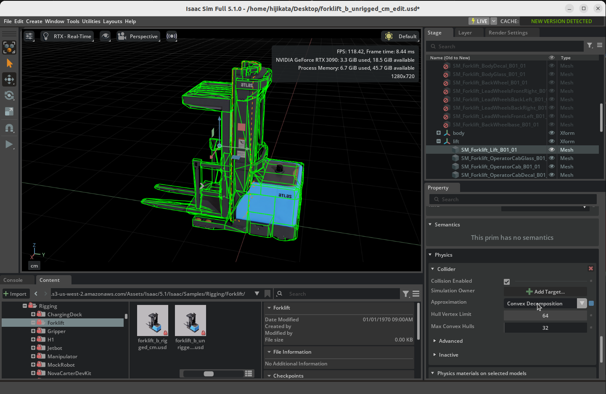

Rig a Mobile Robot¶
Learning Objectives¶
After completing this tutorial, you will have learned:
- How to analyze the joint configuration of a robot asset
- How to organize a USD hierarchy and group with Xform
- How to assign collision approximations (Convex Decomposition, cylinders, etc.)
- How to add Prismatic Joints / Revolute Joints and configure drives
- How to add articulations
- How to handle asset unit conversion
Getting Started¶
Prerequisites¶
- Complete Tutorial 3: Articulate a Basic Robot before starting this tutorial.
Estimated Time¶
Approximately 30 minutes.
Overview¶
Rigging is the process of setting up joints, collisions, physics properties, and other components on a 3D model to make it movable in simulation. While the term originates from 3DCG and animation, in Isaac Sim it refers to the overall process of building a physics-ready robot model.
In this tutorial, you will convert an unrigged (no joints or physics properties configured) forklift USD asset into a fully articulated mobile robot. This is a hands-on exercise that applies the fundamentals learned in Tutorials 2-3 (Rigid Body, collisions, joints, articulations) to a real robot asset.
Assets Used¶
This tutorial uses the forklift assets included with Isaac Sim. You can access them from the Content tab at the bottom right of the screen:
| Asset | Path | Purpose |
|---|---|---|
| Unrigged (working copy) | Samples > Rigging > Forklift > forklift_b_unrigged_cm |
Asset to edit in this tutorial |
| Rigged (reference) | Samples > Rigging > Forklift > forklift_b_rigged_cm |
Reference of the completed asset |
How to Load the Asset
When loading the asset, open it as a File (not as a reference). Since this tutorial makes direct changes to the asset, it must be opened as a file rather than a reference.
Step 1: Identifying the Joints¶
Before starting the rigging process, analyze what joints the forklift needs.
This forklift has 7 degrees of freedom (DOF):
| Part | Joint Type | Actuated | Description |
|---|---|---|---|
| Front rollers x 4 | Revolute Joint | No | Rollers that rotate freely on contact with the ground |
| Fork | Prismatic Joint | Yes | Vertical movement of the fork |
| Rear wheel | Revolute Joint | Yes | Wheel rotation for driving |
| Rear wheel swivel | Revolute Joint | Yes | Pivot rotation for steering |

Step 2: Organizing the USD Hierarchy¶
Before adding joints, you need to group meshes into logical groups. Create Xforms to organize related meshes.
Organizing Body and Lift¶
- Right-click the root Xform (SMV_Forklift_B01_01) in the stage tree and create two Xforms via Create > Xform.
- Rename them to body and lift respectively.
- Drag and drop the meshes corresponding to the forklift body (chassis) into the body Xform.
- Drag and drop the meshes corresponding to the fork (lift) into the lift Xform.

Organizing the Wheels¶
When creating Xforms for wheels, the Xform origin must be aligned with the actual position of each wheel mesh to correctly position the joint rotation center.
1. Creating Wheel Xforms¶
Right-click the root Xform (SMV_Forklift_B01_01) and create the following 6 Xforms via Create > Xform, then rename them:
- roller_front_left, roller_front_right, roller_back_left, roller_back_right
- back_wheel (driving wheel)
- back_wheel_swivel (steering swivel)
2. Setting Xform Transforms¶
Set each Xform's Translate to match the rotation center of its corresponding mesh.
When you select a mesh and look at the Property tab, you may notice a Translate:pivot value displayed in addition to Translate.
What is Translate:pivot?
Translate:pivot is a USD transform operation that specifies the center point (pivot) for rotation and scaling. Normally, rotation and scaling are performed around the object's local origin (0, 0, 0), but 3D models exported from DCC tools (Blender, Maya, etc.) often have geometry origins that do not align with the rotation center. In such cases, Translate:pivot is set to specify the correct rotation center.
In other words, the actual rotation center of a mesh is at Translate + Translate:pivot.
Since the joint rotation axis is placed at the Xform origin, each Xform's Translate must be set to the sum of the mesh's Translate and Translate:pivot. The values are summarized in the table below:
| Xform Name | Corresponding Mesh | Translate Value |
|---|---|---|
| roller_front_left | Front roller left mesh | (49.90, -91.01, 7.83) |
| roller_front_right | Front roller right mesh | (-49.90, -91.01, 7.83) |
| roller_back_left | Rear roller left mesh | (49.90, -71.75, 7.83) |
| roller_back_right | Rear roller right mesh | (-49.90, -71.75, 7.83) |
| back_wheel | Rear wheel mesh | (0.76, 57.99, 15.80) |
| back_wheel_swivel | Rear wheel swivel mesh | (-7.87, 57.75, 35.57) |
How to Check Translate:pivot
Select the mesh and check the Transform section in the Property tab. Translate:pivot is displayed below Translate. Add these two values together for each axis (X, Y, Z) and set the result as the Xform's Translate.
Auto-calculate with Script Editor
Instead of calculating manually, you can run the following script in Window > Script Editor to automatically compute the correct Xform positions:
from pxr import UsdGeom, Gf
stage = omni.usd.get_context().get_stage()
# List target mesh paths (replace with actual paths)
mesh_paths = [
"/SMV_Forklift_B01_01/SM_Forklift_LeadWheelsFrontLeft_B01_01",
"/SMV_Forklift_B01_01/SM_Forklift_LeadWheelsFrontRight_B01_01",
"/SMV_Forklift_B01_01/SM_Forklift_LeadWheelsBackLeft_B01_01",
"/SMV_Forklift_B01_01/SM_Forklift_LeadWheelsBackRight_B01_01",
"/SMV_Forklift_B01_01/SM_Forklift_BackWheel_B01_01",
"/SMV_Forklift_B01_01/SM_Forklift_BackWheelbase_B01_01",
]
for path in mesh_paths:
prim = stage.GetPrimAtPath(path)
xformable = UsdGeom.Xformable(prim)
translate = Gf.Vec3d(0, 0, 0)
pivot = Gf.Vec3d(0, 0, 0)
for op in xformable.GetOrderedXformOps():
if op.GetOpName() == "xformOp:translate":
translate = Gf.Vec3d(op.Get())
elif op.GetOpName() == "xformOp:translate:pivot":
pivot = Gf.Vec3d(op.Get())
result = translate + pivot
print(f"{path.split('/')[-1]}: Xform Translate = {result}")
You can directly use the output values as each Xform's Translate.
3. Moving Meshes Under Xforms¶
Drag and drop each corresponding mesh into its respective Xform.
Adjusting Mesh Translate
After moving a mesh under an Xform, set the mesh's Translate to -Translate:pivot (the negated value of Translate:pivot). This keeps the mesh's visual position unchanged while correctly positioning the Xform origin at the joint rotation center. If the Xform transform was set correctly in the previous step, the mesh's Translate should already be approximately equal to -Translate:pivot.
Verify Values with the Rigged Asset
If you are unsure about the values, you can open the forklift_b_rigged_cm (rigged) asset to check and compare the Xform transform values.

Applying Rigid Body¶
- Select all created Xforms (body, lift, four rollers, back_wheel, back_wheel_swivel).
- Apply Physics > Rigid Body from the + Add button in the Property tab.


Step 3: Assigning Collision Meshes¶
Assign collision meshes for physics simulation to each part.
About the Provided Asset's Collisions
The provided forklift asset already has collision properties configured. Here you will learn the types of collision approximations and how to set them up.
Body and Lift Collisions¶
Use Convex Decomposition approximation for complex-shaped meshes.
- Select a body or lift mesh (in the figure below, SM_Forklift_Lift_B01_01).
- Right-click and select Add > Physics > Collider Preset.
- In the Collision section of the Property tab, change Approximation to Convex Decomposition.
Default (Convex Hull) 
Convex Decomposition 
Wheel Collisions¶
Use cylinder approximation for wheels. Instead of attaching colliders directly to meshes, place dedicated cylinder primitives.
Front Rollers¶
- Create a cylinder mesh directly under each roller Xform (Create > Shape > Cylinder).
- Set the following in the cylinder's Property tab:
- Scale: (0.16, 0.16, 0.08)
- Orient: Rotate Y axis by 90 degrees
- Translate: Set all to 0
- Add a Collider to the cylinder.
Rear Wheel¶
- Create a cylinder mesh directly under the back_wheel Xform.
- Set the following in the cylinder's Property tab:
- Scale: (0.3, 0.3, 0.1)
- Orient: Rotate Y axis by 90 degrees
- Translate: Set all to 0
- Add a Collider to the cylinder.

Step 4: Adding Joints and Drives¶
Prismatic Joint for the Fork¶
Add a Prismatic Joint to enable vertical movement of the fork.
-
Select body in the stage tree, then hold Ctrl and select lift.
Selection Order
As with Revolute Joints, the first selected body becomes Body 0 (parent: fixed side), and the second selected lift becomes Body 1 (child: moving side).
-
Right-click and select Create > Physics > Joints > Prismatic Joint.
- Set the following in the Property tab:
- Axis: Z (vertical direction)
- Lower Limit: -15
- Upper Limit: 200
- Add Physics > Linear Drive via + Add and set the following:
- Target Position: -15
- Damping: 10000
- Stiffness: 100000
- Rename the joint to lift_joint and place it inside an organizing Scope.

Revolute Joints for Front Rollers¶
The front rollers are unactuated (no drive) revolute joints.
- Select body in the stage tree, then hold Ctrl and select a roller Xform (e.g., roller_front_left).
- Right-click and select Create > Physics > Joints > Revolute Joint.
- Set Axis to X in the Property tab.
- Repeat the same procedure for the remaining three rollers (roller_front_right, roller_back_left, roller_back_right).
- Organize the created joints inside a roller_joints Scope.
Revolute Joints for the Rear Wheel¶
The rear wheel requires two joints: one for driving rotation and one for steering swivel.
Driving Joint (back_wheel_swivel ↔ back_wheel)¶
- Select back_wheel_swivel in the stage tree, then hold Ctrl and select back_wheel.
- Select Create > Physics > Joints > Revolute Joint.
- Add Physics > Angular Drive via + Add and set the following:
- Damping: 10000
- Stiffness: 100
Steering Joint (body ↔ back_wheel_swivel)¶
- Select body in the stage tree, then hold Ctrl and select back_wheel_swivel.
- Select Create > Physics > Joints > Revolute Joint.
- Set the following in the Property tab:
- Axis: Z (vertical swivel)
- Lower Limit: -60 (degrees)
- Upper Limit: 60 (degrees)
- Add Physics > Angular Drive via + Add and set the following:
- Damping: 100
- Stiffness: 100000
- Organize the created joints inside a back_wheel_joints Scope.

Step 5: Adding Articulation¶
Set up an articulation root to treat all joints as a single physics solver chain.
- Right-click the root Xform (SMV_Forklift_B01_01) in the stage tree.
- Select Add > Physics > Articulation Root. If the option is not available, the Articulation Root may already be set by default.
- Disable the Self Collision checkbox in the Property tab.
Disabling Self Collision
If collision meshes overlap between adjacent parts, self-collision can cause simulation instability. Disable Self Collision to prevent this.
Where to Place the Articulation Root
For mobile robots, place the Articulation Root on the robot's root Xform (chassis/base). For robot arms, the best practice is to place it on the fixed joint.
Step 6: Asset Unit Conversion¶
The provided forklift asset is created in centimeter units. Since the default Isaac Sim Stage uses meter units, unit conversion is needed.
Automatic Unit Conversion
When adding a centimeter-based asset to a meter-based Stage, Isaac Sim's Metrics Assembler extension automatically converts the scale. Manual conversion is usually not required.
Testing in Simulation¶
Test whether the rigging has been done correctly.
- Select the rear wheel joint (driving) and set the Angular Drive's Target Velocity to -200.
- Press Play to start the simulation.
- Verify that the forklift moves forward.

If the Robot 'Explodes' During Simulation
If robot parts fly apart when the simulation starts, collision meshes between connected parts may be overlapping (interpenetrating). Check the shape and size of collision meshes and adjust them so there is no interference between parts.
Summary¶
This tutorial covered the following topics:
- Analyzing the joint configuration (7 DOF) of a robot asset
- Organizing the USD hierarchy and grouping meshes using Xform
- Assigning collision meshes with Convex Decomposition and cylinder approximation
- Adding Prismatic Joints and Revolute Joints, configuring Linear Drives and Angular Drives
- Adding an Articulation Root and configuring Self Collision
- Handling asset unit conversion with Metrics Assembler
Reference Asset
The completed forklift can be compared with the forklift_b_rigged_cm asset in the Samples > Rigging > Forklift folder in the Content tab.
Next Steps¶
Proceed to the next tutorial, "Setup a Manipulator", to learn how to import a robot arm from URDF and connect a gripper.